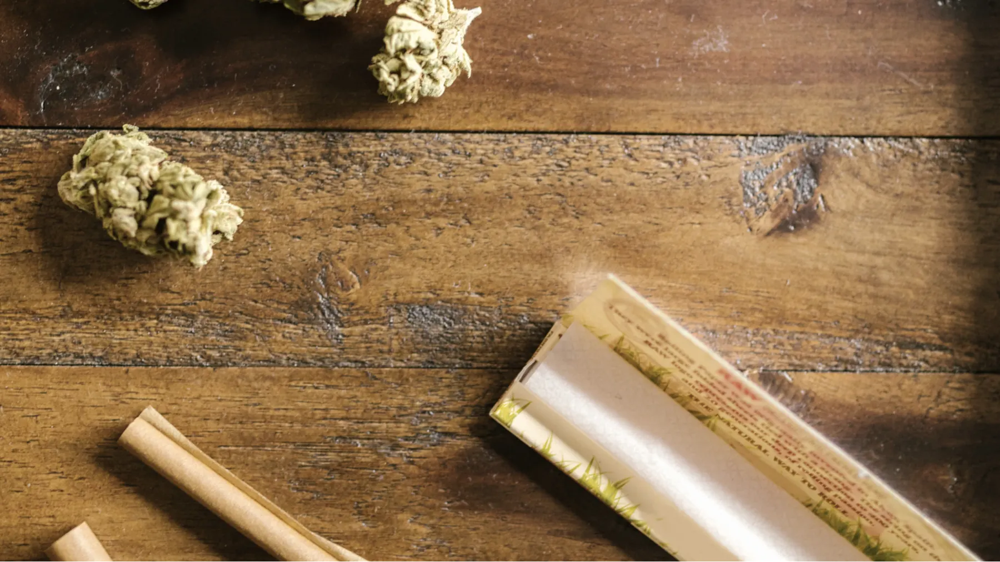
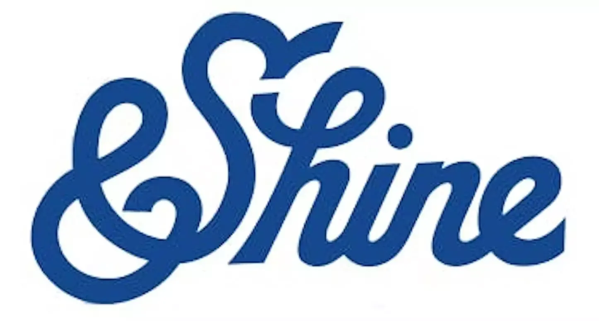
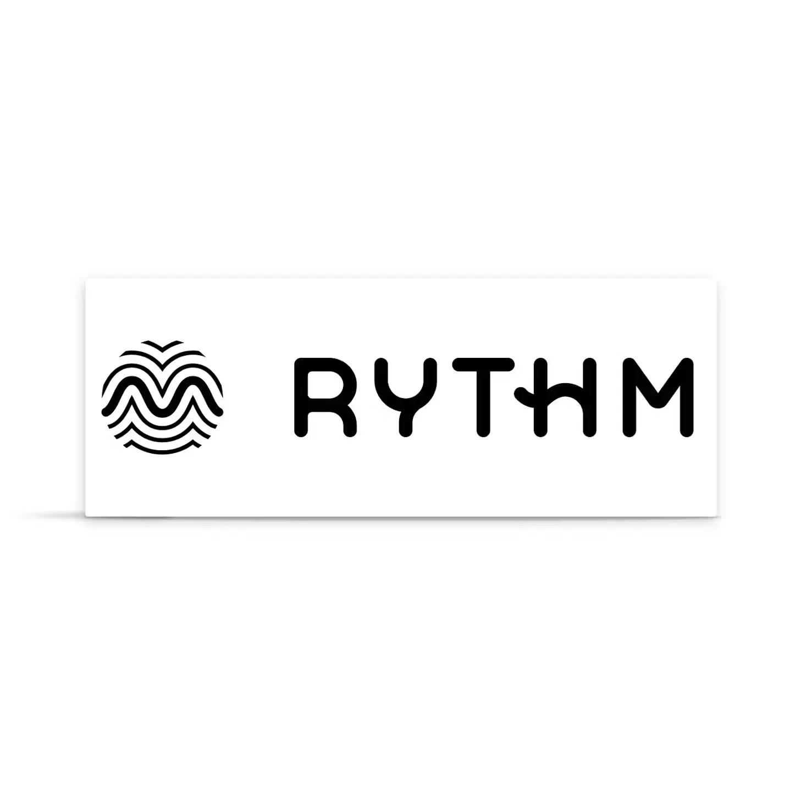
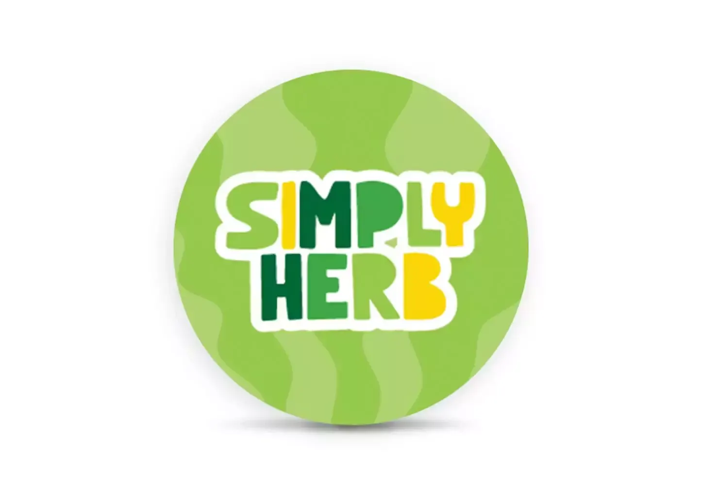
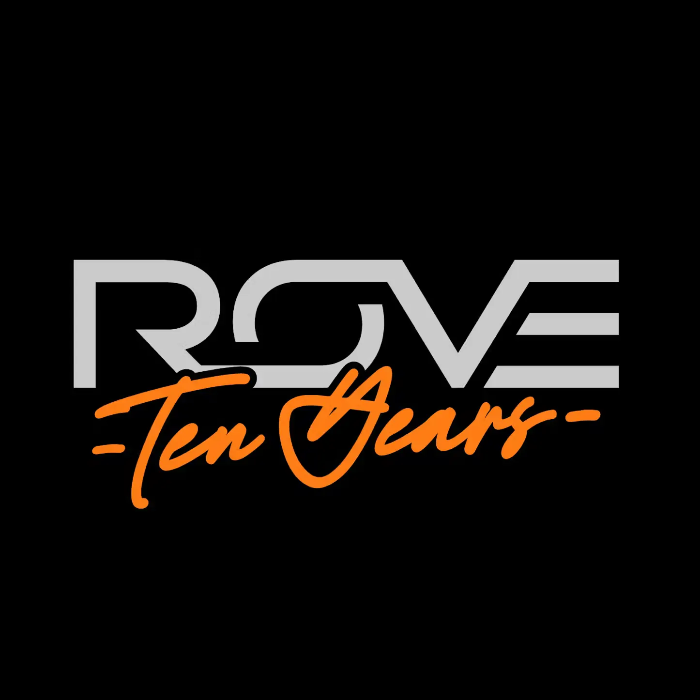

New Jersey & national favorites
Top Cannabis Brands at The Retreat
Your wellness routine belongs to you, and the cannabis brands behind it should feel just as intentional. At The Retreat, we bring together New Jersey’s most trusted cultivators and the national names worth knowing. Browse popular brands and customer favorites below.


New Jersey Favorites
Popular New Jersey Brands
Support the Garden State’s finest right here in Bergen-Lafayette. Our dispensary proudly sources cannabis from New Jersey cultivators and producers who care as deeply about what goes into their products as you do about what goes into your body. Explore the local brands our customers love.

Disposable vapes and vape cartridges with reliable quality for any occasion. Cultivated and processed in Paterson, NJ.
Shop &Shine Egg Harbor Township, NJBotanistFlower and pre-rolls grown from Egg Harbor Township, NJ. Deep plant science and natural profiles.
Shop Botanist Paterson, NJGood GreenPremium flower harvested in Paterson, NJ. Responsibly cultivated with a mission to fund local social equity initiatives.
Shop Good Green Boonton, NJKind TreeInfused pre-rolls and live resin, cultivated in Boonton, NJ. Clean, all-natural extraction.
Shop Kind Tree Boonton, NJLegendFlower and shatter as everyday staples. Exceptional value out of Boonton, NJ without skipping on quality.
Shop Legend Franklin, NJOzonePre-rolls and disposable vapes. Clean, high-testing yields grown in Franklin, NJ. An elevated, contemporary smoke.
Shop Ozone
Flower, infused pre-rolls, live resin, and live rosin. 100% state-grown, premium lines out of Paterson, NJ.
Shop RYTHM
Vape cartridges, flower, and shake. Wonderfully straightforward from Boonton, NJ for everyday enjoyment.
Shop Simply HerbNational Favorites
Popular National Brands
Some cannabis brands follow you wherever you go. If you’ve built a relationship with one that works for you, we carry a curated selection of legendary brands recognized for their award-winning consistency and precise dosing. Find your familiar, or let a trusted name be your introduction to something new.
Flavor-forward gummies. Tailored terpene blends that evoke a specific state of mind.
Shop Camino National favoriteCookiesPremium indoor flower that sets the standard in elite genetics. Founded by a global icon.
Shop Cookies National favoriteDogwalkersPre-rolls conveniently packaged as singles and multi-packs. Inspired by long walks with a four-legged friend.
Shop Dogwalkers National favoriteFernwayVape cartridges and disposable vapes from one of New England’s top brands. Crisp, true-to-flavor profiles.
Shop Fernway National favoriteGood TideGummies crafted by the creators of Wyld. A natural, tropical escape to your routine.
Shop Good Tide National favoriteILLICITFlower, pre-rolls, live sugar, originally hailing from Missouri. Uncompromising quality and a mission for criminal justice reform.
Shop ILLICIT National favoriteIncrediblesGummies and chocolate bars, celebrated for over a decade. Precise, worry-free dosing in every single bite.
Shop Incredibles
Infused pre-rolls and disposable vapes. Organic, single-source materials for deep flavor profiles.
Shop RoveGoogle reviews
Hear It from NJ Locals
“Incredible dispensary! It looks amazingly beautiful and serene inside. They have great deals and a large selection.”
“This is the place to shop in Jersey City! Welcoming interior, wonderful staff and amazing menu. Can’t wait to visit again soon!”
“The Retreat is beautifully done and has an amazing selection! I’ll be back!”
FAQ
Frequently Asked Questions
What are the best cannabis brands in New Jersey?
The best in New Jersey looks different for everyone. If flower is your foundation, Good Green delivers consistent, premium buds. For quality without the premium price tag, Simply Herb’s vape cartridges, flower, and shake are crowd-pleasers. And if you value convenience as much as potency, Ozone pre-rolls and disposable vapes were practically made for you.
Local enthusiasts choose Kind Tree for the potency of their infused pre-rolls and live resin. Legend cements its spot on the Jersey map with flower and shatter that’s sessionable and affordable.
What local New Jersey brands do you recommend?
If flavor is what moves you, start with &Shine. Their disposable vapes and cartridges are built around rich terpene profiles. For those who appreciate the full story behind what they’re consuming, The Botanist honors the true nature of the plant in their flower and pre-rolls. And if you’re after something that sets the standard, RYTHM’s flower, infused pre-rolls, and live resin are as close to gold as New Jersey gets.
If you’re ready to explore higher potency, High Wired and Superflux are two local names to know. High Wired’s infused pre-rolls are built for high tolerance and intense effects. Superflux can be part of your extract-focused routine with infused pre-rolls, ground flower, and cured resin.
What are your most popular national brands?
Our customers lean into premium flower, smooth pre-rolls, and high-quality edibles. Camino’s gummies with tailored effects have become a ritual staple, with each variety crafted around a specific mood. Incredibles brings that same thoughtfulness to their gummies and candy bars. Smokiez Edibles has become the go-to for anyone who wants their fruit chews to taste like a treat.
Dogwalkers is our standout national brand for pre-rolls that are portable and perfect for on-the-go. Customers choose ILLICIT for the exceptional quality of their flower, pre-rolls, and live sugar.
Which brands are best for beginners?
The most important thing is starting with a product that feels safe and manageable. For smoke-free options, Camino, Wana, and Incredibles are celebrated for their micro-dosing and consistency. It’s easy to start with a gentle, predictable amount. Camino’s low-dose gummies are formulated with soothing cannabinoids for a gentle experience. Wana’s fast-acting gummies take the guesswork out of timing. Incredibles’ gummies and scored candy bars let you break off exactly what feels right.
If you prefer smoking and want to ease in, Dogwalkers and Miss Grass design their products with you in mind. Dogwalkers’ Mini Dogs are intentionally small for a single, relaxed session. Miss Grass offers packs of mini pre-rolls that are as approachable as they are enjoyable.
How do I shop for a specific brand’s products on your menu?
Two easy ways. If you already know the brand you’re after, head to our menu and tap “Brands” near the top. Find your brand in the list, click in, and you’ll see everything we carry from them.
The other way: browse the menu by category first (flower, pre-rolls, edibles, etc.) and use the “Brands” filter once you’re inside a category. That will narrow things down.